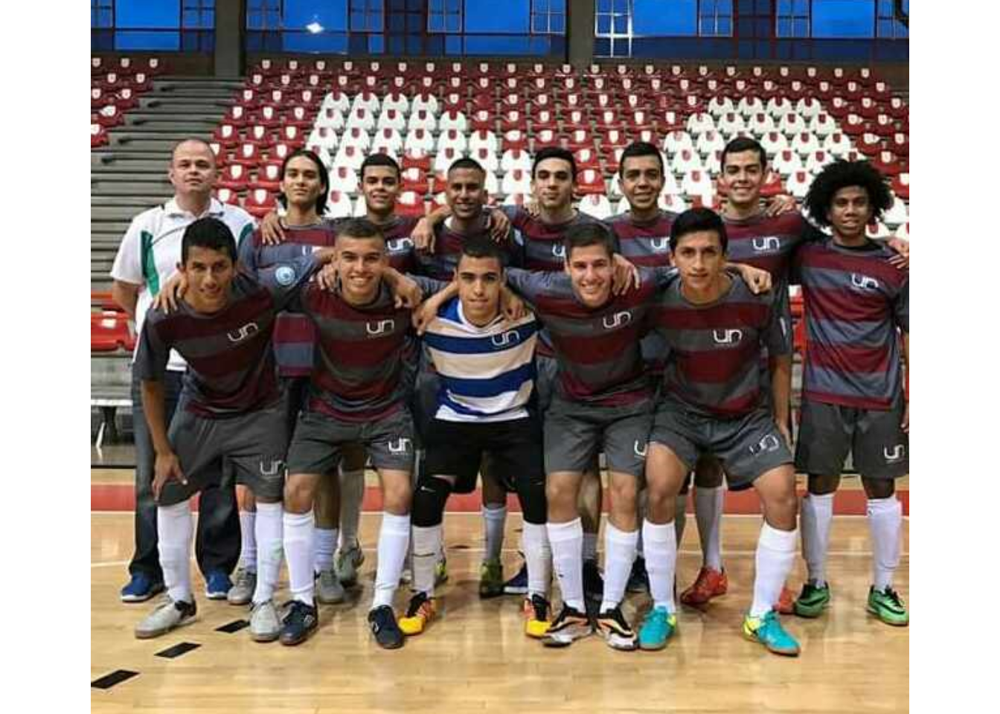

Mi nombre es Yuberth Anderson Saavedra Coneo, soy oriundo del municipio de Caucasia y actualmente vivo en la ciudad de Medellín. Realicé el bachillerato en distintas instituciones educativas y regiones del país; debido a que, el cambio de domicilio por parte de mi padre siempre fue necesario por cuestiones laborales y sumado a eso, la separación de mis padres cuando yo tenía cinco años también influyó. Me gradué orgullosamente en la Institución Educativa Liceo Caucasia, reconocida como una de las mejores instituciones educativas públicas del departamento de Antioquia por su alto índice de estudiantes admitidos favorecidos con el programa Ser Pilo Paga; similarmente, la considerable cifra de admitidos a la Universidad de Antioquia y a la Universidad Nacional de Colombia sede Medellín.
En el Liceo realizo el pago de las horas sociales correspondientes a mis deberes con la Corporación para el Fomento de la Educación Superior de la Gobernación de Antioquia y así, cumplir a cabalidad cumplir con el reglamento operativo de la beca Mejores Bachilleres, la cual obtuve al ingresar al pregrado en Estadística en la Universidad Nacional de Colombia sede Medellín.

Por otro lado, me siento motivado para adquirir conocimientos sobre las nuevas tecnologías de programación en estadística y poder hacer uso de ellas para modelar algunas posibles soluciones a los problemas presentados en mi entorno social.

Actualmente comparto una relación amorosa con Karen Julieth Márquez Polo, quien en unión con mi familia es la persona que me motiva a luchar para alcanzar mis sueños. Ella es de gran apoyo para mí, es mi confidente, le comparto mis sueños e ilusiones y tenemos más de dos años compartiendo buenos y malos momentos que nos han ayudado a crecer como personas integras.
Finalmente, como estudiante represento a mi universidad en el equipo competitivo de Fútbol Sala; en primer año (2016), tuvé junto a mis compañeros la oportunidad de llegar a la final del Torneo Departamental de Fútbol Sala, Categoria Sub 20; no obstante, dicho torneo se nos escapo de las manos dado que el equipo adversario (Molino Viejo), nos remontó el partido de un favorable 3-1 a un triste 4-3. El año pasado, llegamos a las semifinales del Torneo INDER Universidades, siendo eliminados por la Universidad San Buenaventura, con un marcador 0-1; dichos torneos son organizado por la Liga Antioqueña de Fútbol. Similiarmente, también participamos en La Copa Oyola, que es organizada por la Universidad Javeriana y, se realiza cada dos años en la ciudad de Cali. Además, competimos el torneo de la Asociación Colombiana de Universidades - ASCUN, que sin duda es el más representativo ya que brinda acceso a las finales nacionales.
